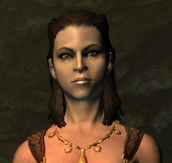

Alva's Journal

My life is dreary. Where is my prince come to rescue me? Where is my bold Nord warrior to sweep me off my feet?
I met a man today when picking nightflowers. He is exciting and exotic. We kissed in the moonlight. It was so romantic. I'm going to see him again tonight.
Now I understand the true colors of the night. Movarth has shown me the true black of night and the true red of blood. He has promised me a feast of blood if I do his bidding in Morthal.
Hroggar was easy to seduce. Movarth said I should find a protector first, someone to watch over my coffin during the day. Hroggar is perfect.
Laelette came to visit me tonight. She slaked my thirst. I've hidden her away to let her rise as my handmaiden. I've spread the rumor in town that she left to join the war. Fools.
Movarth has confided his grand plan to me. I am to seduce the guardsman one at a time and make them my slaves. Then he and the others from the coven can descend upon Morthal and take the entire town. We won't kill them. They will become cattle for our thirst. An endless supply of blood and an entire town to protect us from the cursed sun.
Hroggar's family is becoming inconvenient. I've told Laelette to kill them all, but make it look like an accident. Hroggar must be seen as innocent if he is going to be my protector.
That little fool! Laelette burned Hroggar's family alive. I asked for an accident and she gave me a scandal. To make matters worse, she tried to turn his little girl, Helgi. Except Laelette couldn't even get that right. She killed the child and left the body to burn.
Something is wrong with Laelette. She keeps talking about Helgi. I think her mind has snapped. She seems to think that the child can still be brought back to be her companion.
There is a stranger in town, looking into the fire. I'll have to be careful.